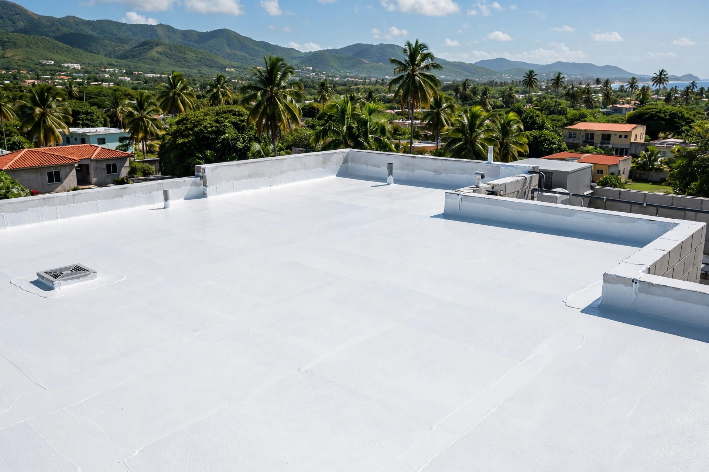
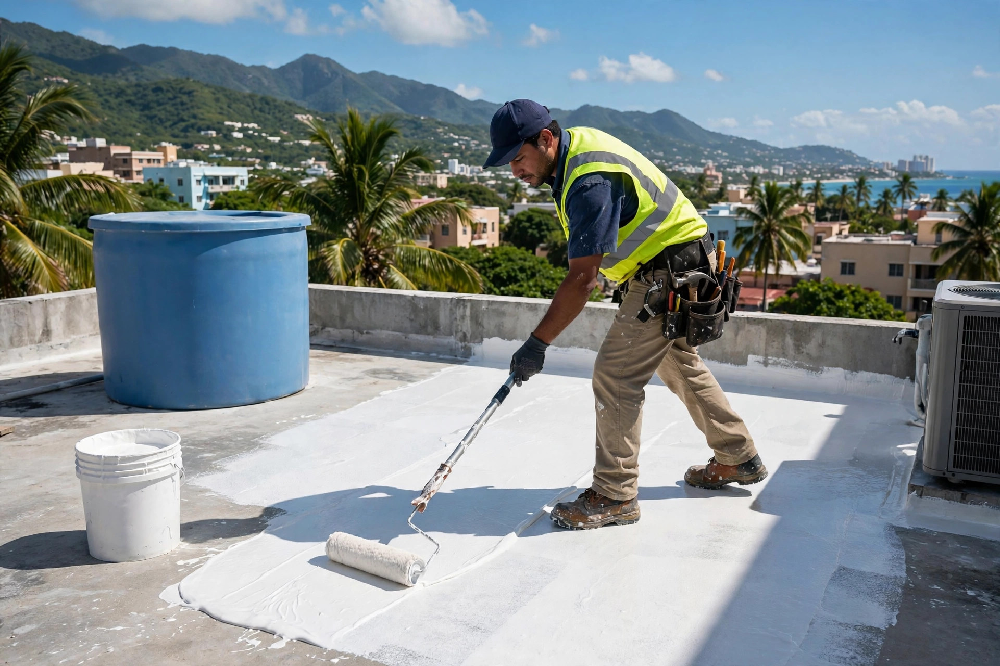
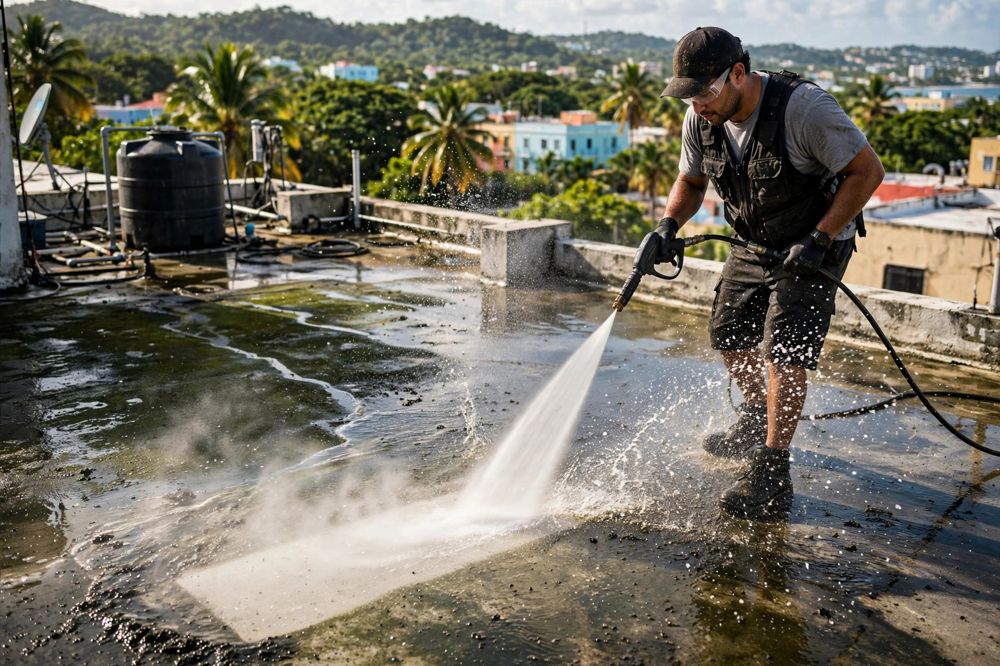
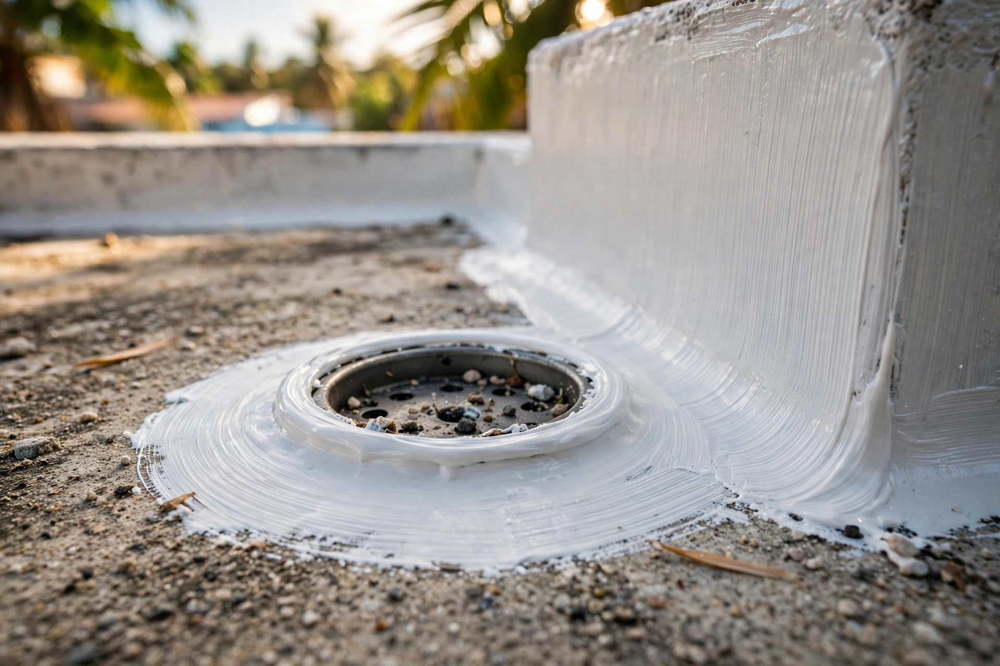

Sellado de techos, lavado a presión y limpieza exterior en Humacao y el área este. Trabajo serio, acabado impecable.
Sellado, reparación y mantenimiento de techos: así queda cuando se hace bien.




Sellado profesional de techos, lavado a presión y limpieza exterior en Humacao y el área este: un solo equipo para techo y exterior.
Sistemas de sellado que aguantan el sol y la lluvia del este.
Dejamos techos, marquesinas y patios como nuevos.
Limpieza completa del exterior de tu propiedad.
Detectamos el origen y lo sellamos de raíz.
Prevención antes de que llegue la temporada de lluvia.
Escríbenos por WhatsApp y cotizamos.
Trabajo serio, trato directo y resultados que se ven.
Sellado y lavado a presión con la misma gente: menos vueltas, mejor precio.
Conocemos los techos y el clima de la zona este.
Trabajo limpio y detallado, sin regueros.
Cotización por WhatsApp al 787-238-2521.
Lo que todo dueño de casa pregunta antes de sellar su techo.
Cada 4 a 5 años, según el sistema aplicado y la exposición al sol y la lluvia. En el este, la lluvia pega fuerte y conviene revisar a tiempo.
Sí. El lavado a presión es un servicio aparte: techos, marquesinas, patios y exteriores.
Sí, si está bien adherido. Si está levantado o cuarteado, se remueve primero para que el nuevo sistema pegue bien.
Sí, servimos Humacao y el área este. Escríbenos y confirmamos tu pueblo.
Por WhatsApp al 787-238-2521: envíanos fotos del techo o del área a lavar y te respondemos con un estimado gratis.
Esta página la creó ManuPro. Escríbenos hoy mismo y cotiza la website profesional de tu negocio.
Cotizar por WhatsApp